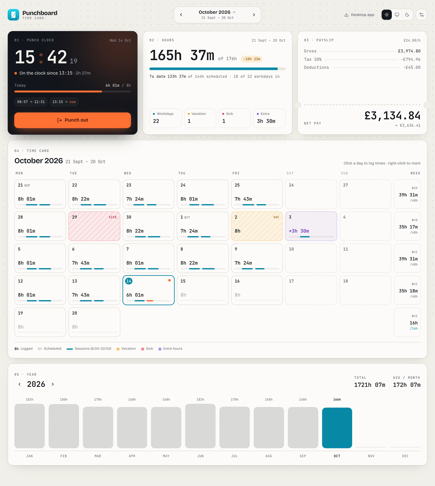
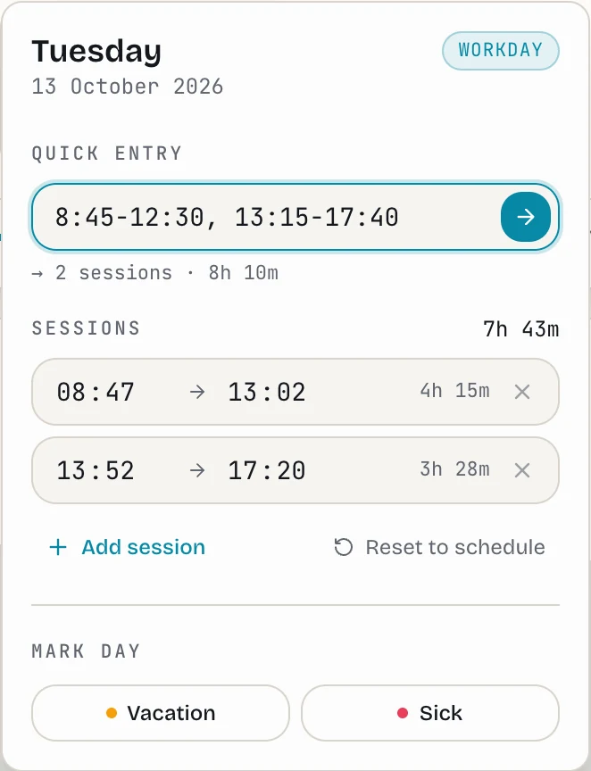
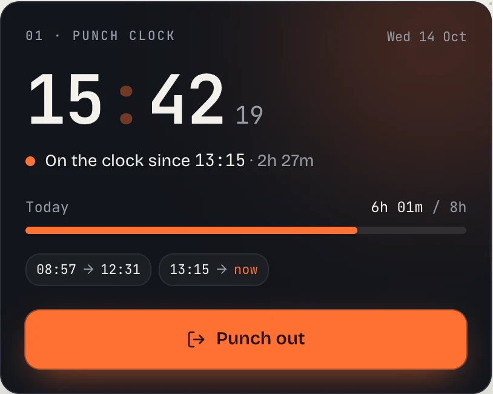
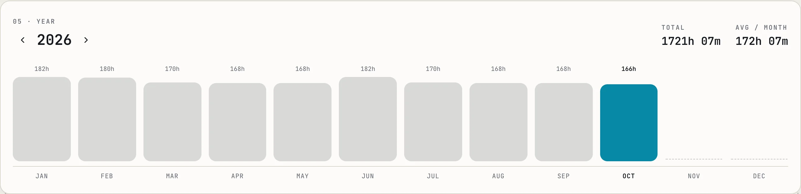
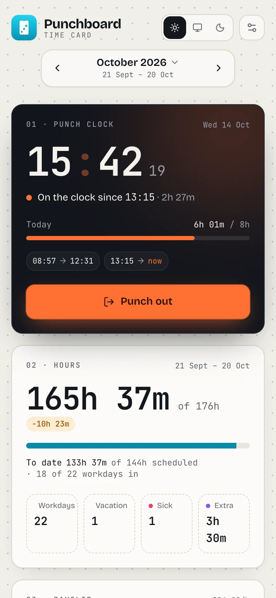

Payslip estimate
Hourly rate, tax and deductions turn into gross and net pay for your actual payslip period — with a custom start day and an optional second currency.
Free & open source · latest
A time card for people paid by the hour. Clock in with one click,
log a day by typing 9-13, 14-18, and watch your hours
turn into a payslip estimate. No account, no server — your data
lives in a file you choose.


01 · Punch clock
Hit Punch in when you start and Punch out when you stop. Every session is saved with its real start and end time, and today's progress ticks along live against your schedule.

02 · Quick entry
Click any day on the time card and just write it down. Punchboard reads the times and shows you what it understood before saving.
9-13, 14-18:308:45 to 179am-5pm22-27h 30m03 · The whole time card
Hourly rate, tax and deductions turn into gross and net pay for your actual payslip period — with a custom start day and an optional second currency.
Mark a day and it's handled — vacation counts as paid hours, sick days don't.
Worked a Saturday? Log it and it's tracked separately from your schedule.
Hours per month, yearly total and average. Click a bar to jump to that month. Weekly totals sit right beside the calendar.

A plain JSON file in iCloud, Dropbox or any folder. The browser version can autosave to a file too.
Desktop apps check for new versions and install them on restart. Light and dark themes included.

04 · Anywhere
The full app runs in your browser — same time card, same punch clock. Point it at a data file and it autosaves there, so you can pick up the desktop app later without losing a minute.
Open in your browser05 · Download
Free, open source, MIT licensed. Current version: —
brew install --cask quackbyte/tap/punchboard
Download →
Windows
Windows 10 and 11
Download →
Linux
Most x64 distributions
Download →
Or browse all releases on GitHub.